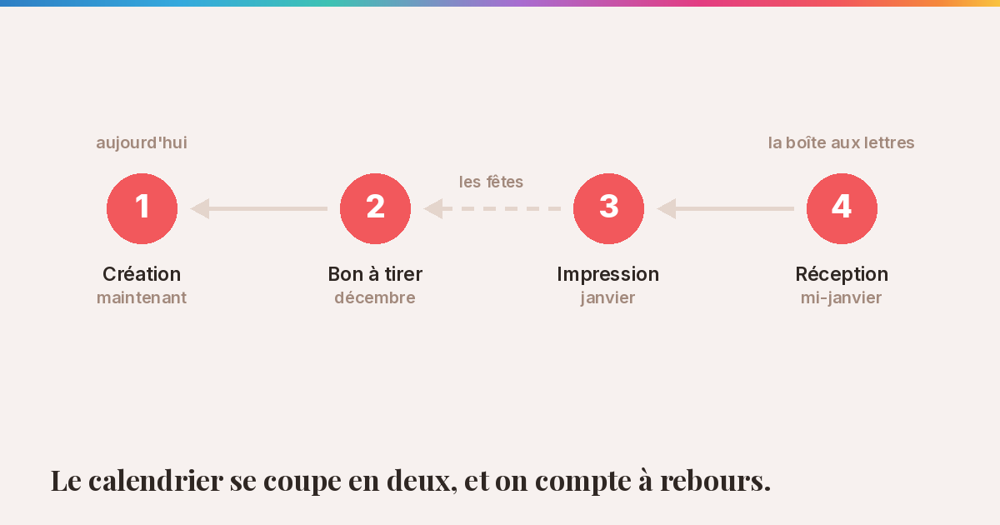
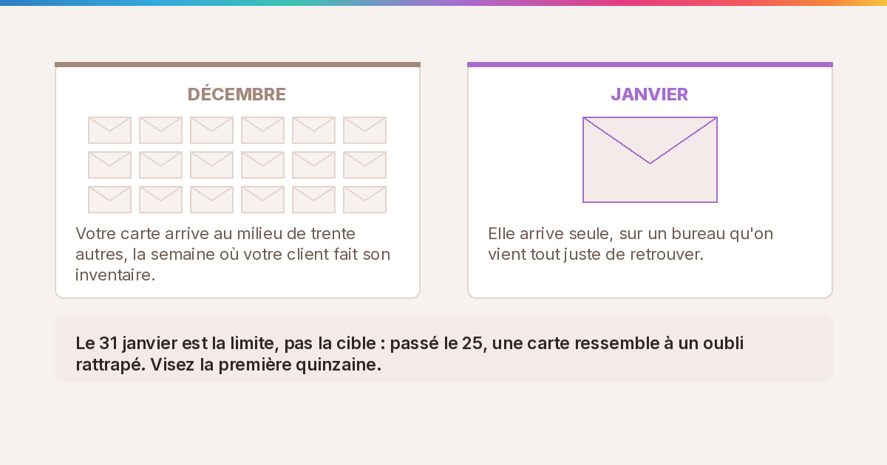
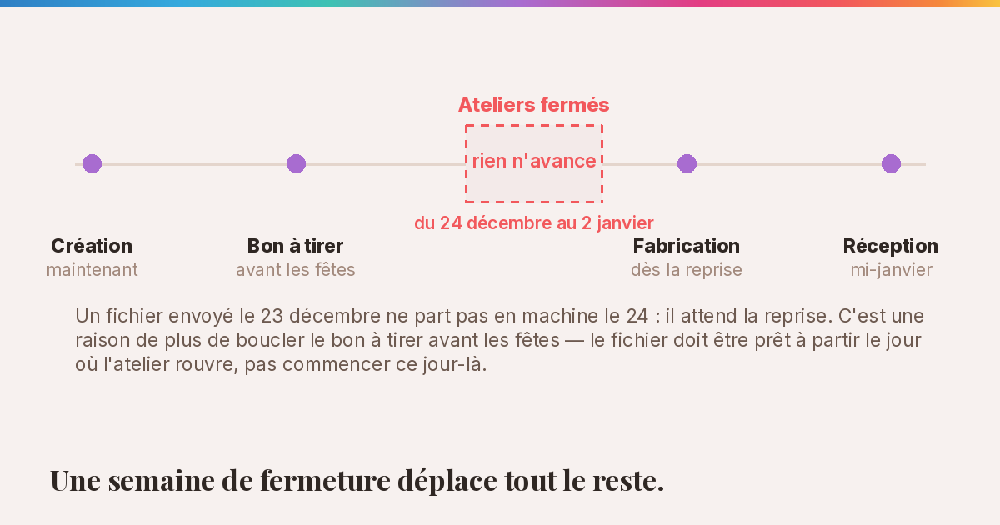

Cartes de vœux : il est trop tard pour Noël, et c'est une bonne nouvelle

Chaque année, la même conversation a lieu autour du 15 décembre : un commerçant appelle, il voudrait des cartes de vœux, et il est déjà trop tard — ou alors au prix d'un tirage en express qui coûte le double.
Autant le dire tout de suite : au 20 novembre, la fenêtre est fermée. Mon imprimeur demande que la création soit lancée sur la première quinzaine de novembre, parce qu'en décembre ce ne sont pas seulement les ateliers qui saturent, ce sont les livraisons. Une commande qui traverse la deuxième quinzaine de décembre n'est plus une commande, c'est un pari.
Ce n'est pas la fin de la conversation. C'est le moment de la déplacer sur janvier.
La carte de vœux se présente jusqu'au 31 janvier
L'usage laisse présenter ses vœux pendant tout le mois de janvier. C'est une convention, pas une règle, mais elle est solidement établie et personne ne vous trouvera en retard le 14 janvier. Presque aucune entreprise ne s'en sert.
C'est ce qui rend la date intéressante. En décembre, votre carte arrive au milieu de trente autres, dans une semaine où votre client fait son inventaire. En janvier, elle arrive seule, sur un bureau qu'on vient de retrouver.
Une précision qui change le calendrier : le 31 janvier est la limite, pas la cible. L'usage veut un envoi dès la reprise, et passé le 25 janvier une carte commence à ressembler à un oubli rattrapé. Visez la première quinzaine. C'est de là qu'on compte à rebours.

Le rétroplanning, coupé en deux
Trois étapes ne se compressent pas : la création, les corrections, la fabrication. Jusqu'ici elles s'enchaînaient. Pour janvier, elles se coupent en deux, et c'est tout l'intérêt.
Maintenant : la création et les corrections. On décide ce qu'on envoie, à qui, et en quelle quantité. Comptez une semaine de création et une semaine d'aller-retour pour les corrections — celles-ci dépendent de votre disponibilité, pas de la mienne, et cette disponibilité, vous l'avez en novembre.

Janvier : la fabrication et la livraison. Les ateliers se sont vidés, les transporteurs aussi, et les délais annoncés redeviennent les délais réels.
Une réserve, et elle compte : entre Noël et le 2 janvier, les imprimeurs prennent des congés comme tout le monde, et beaucoup ferment une semaine entière. Un fichier envoyé le 23 décembre ne part pas en machine le 24, il attend la reprise. C'est une raison de plus de tout boucler avant les fêtes : le fichier doit être prêt à partir le jour où l'atelier rouvre, pas commencer ce jour-là.
Votre fichier attend pendant les fêtes, votre commande non. L'erreur de calcul, elle, ne change pas : on compte à partir d'aujourd'hui, alors qu'il faut compter à l'envers, depuis le jour où la carte doit être dans la boîte aux lettres.
En décembre, votre carte arrive au milieu de trente autres. En janvier, elle arrive seule.
Pourquoi une carte imprimée, en 2026
La question est légitime, et la réponse n'est pas sentimentale.
Un message de vœux par courriel se lit en deux secondes et se referme. Il entre en concurrence, le même jour, avec trente autres messages identiques, et personne ne se souvient de qui l'a envoyé.
Une carte imprimée reste deux ou trois semaines sur un bureau. Elle est posée debout contre un écran, vue par les collègues de votre client, et elle porte votre nom en continu. La différence se mesure en durée d'exposition.
Deux conditions, cependant. Le papier doit se sentir sous les doigts — une carte sur du papier bureautique fait l'effet inverse de celui recherché. Et le texte ne doit rien vendre : des vœux sincères tiennent en deux phrases, et dès qu'une carte contient une remise, c'est un prospectus. Vos clients font parfaitement la différence.
L'emballage : à produire une fois, pour toute l'année
Pour les commerces qui vendent un objet, il y a moins cher qu'une carte : l'emballage. Mais pas pour ce Noël-ci — la même fenêtre s'est refermée dessus. C'est une bonne occasion d'arrêter de le traiter comme un support de Noël, parce qu'il n'en est pas un.
Deux pièces simples suffisent : un bandeau imprimé qui ceint le paquet avec votre logo, et un adhésif rond à votre marque qui ferme le papier de soie. Posés sur un kraft ordinaire, ils transforment un paquet en cadeau — et vos clients les photographient, ce qu'aucun autre support n'obtient.
Un bandeau sans millésime et sans flocon sert aussi aux anniversaires, à la fête des mères, aux commandes spéciales — et au Noël suivant. Produit une fois en janvier, dans le même passage que vos cartes, il couvre l'année entière.
Et pour les restaurants
Un cas particulier, et le seul dont l'échéance n'a pas bougé : les menus de fêtes. Si vous servez un réveillon, la carte spéciale doit être écrite, composée et imprimée avant la mi-décembre, au moment précis où votre cuisine est le plus occupée. Le réveillon, lui, ne se décale pas en janvier.
C'est donc la seule chose de cet article qui soit encore urgente, et elle l'est vraiment. Le délai tenable dépend du tirage et de la finition : c'est une question à poser à votre imprimeur cette semaine, pas à estimer. Si vous tenez un établissement, cette page détaille comment je travaille sur les cartes et menus.
Ce qu'une carte de janvier dit de vous
Beaucoup de commerces et d'ateliers des Pyrénées-Orientales sont tenus par la même famille depuis vingt ou trente ans. Une carte de début d'année est à peu près le seul moment où il est naturel de le dire : un nom, une maison, des gens. Ça se lit tout de suite sur un support bien fait — vous pouvez en juger dans les réalisations du studio.
Si vous visez janvier, le moment pour en parler est maintenant : c'est le texte qui est la partie longue, et c'est maintenant que vous avez le temps de l'écrire. Dites-moi ce que vous avez en tête, même approximatif, et une idée de quantité — je vous réponds sur ce qui est tenable et à quel budget. Le détail est sur la page prestations.
Un projet en préparation ?
Un premier échange est gratuit, et franc — y compris quand la réponse est que vous n'avez besoin de rien.